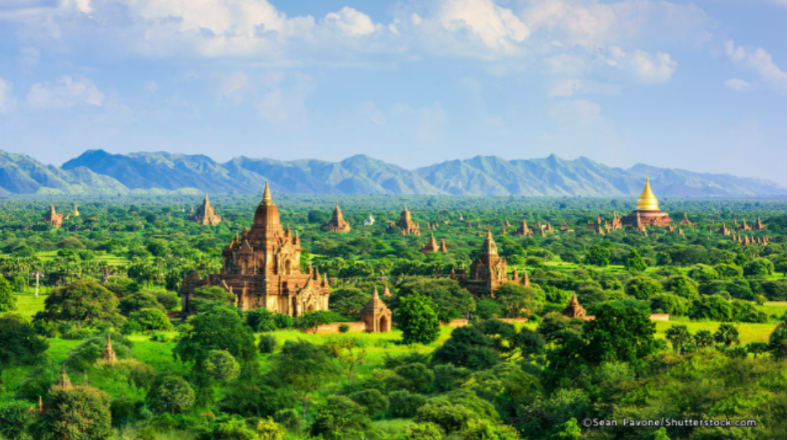
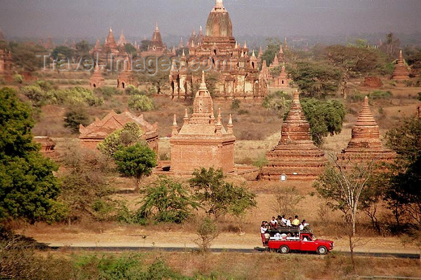
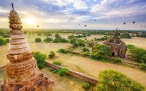
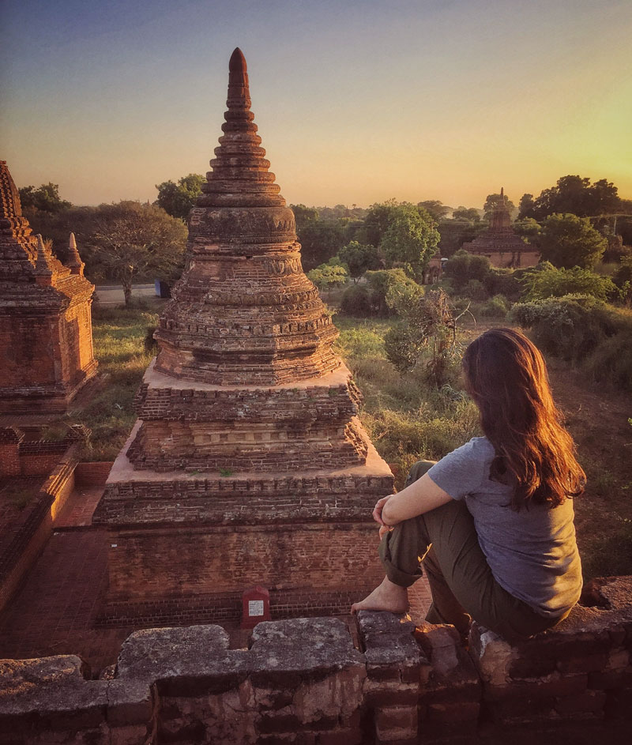
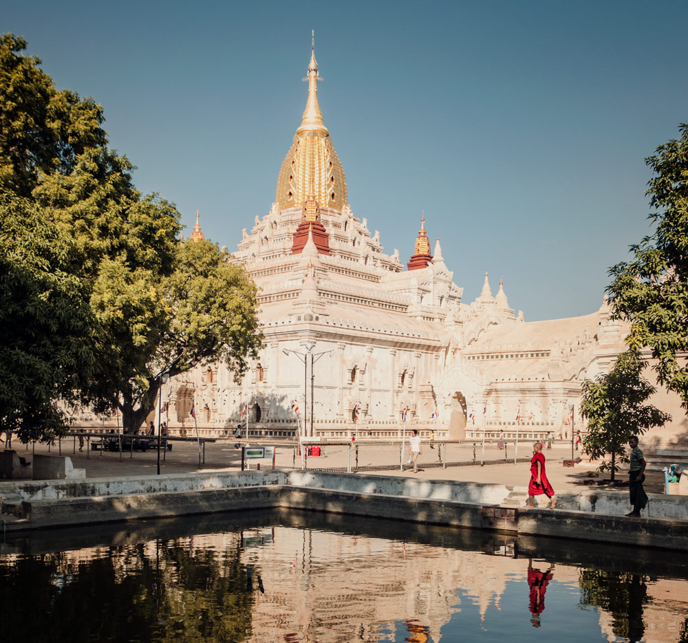
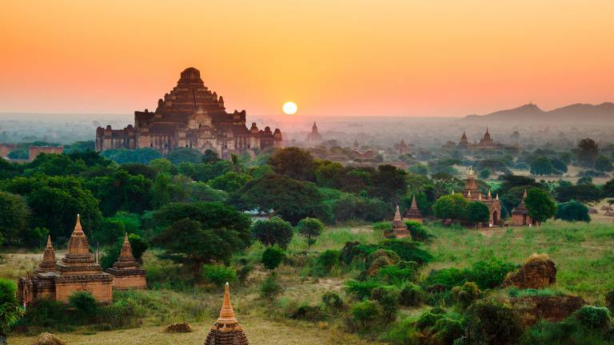
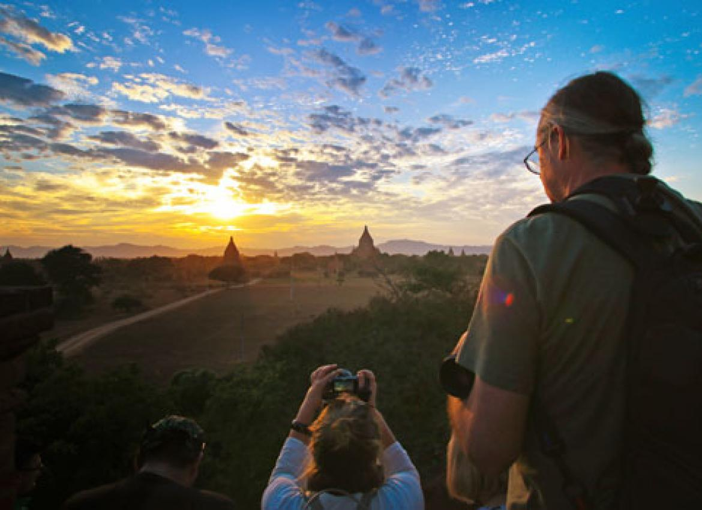
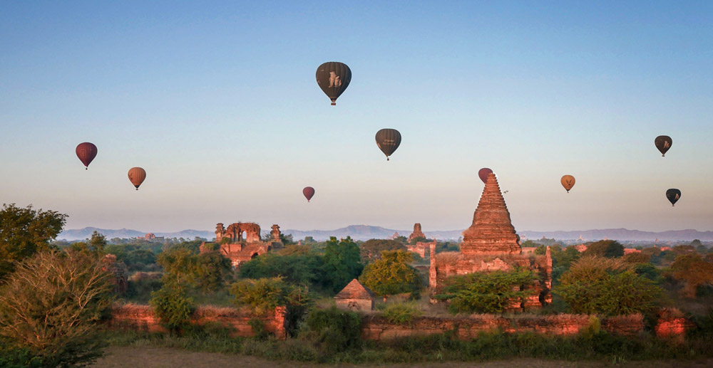

Bagan

Bagan
is an ancient city located in the Mandalay Region of Myanmar. From the 9th to 13th centuries, the city was the capital of the Pagan Kingdom, the first kingdom that unified the regions that would later constitute modern Myanmar. During the kingdom's height between the 11th and 13th centuries, over 10,000 Buddhisttemples, pagodas and monasteries were constructed in the Bagan plains alone, of which the remains of over 2,200 temples and pagodas still survive to the present day.
The Bagan Archaeological Zone is a main attraction for the country's nascent tourism industry. It is seen by many as equal in attraction to Angkor Wat in Cambodia. Bagan's prosperous economy built over 10,000 temples between the 11th and 13th centuries. According to the Burmese chronicles, Bagan was founded in the second century AD, and fortified in 849 AD by King Pyinbya, 34th successor of the founder of early Bagan. Mainstream scholarship however holds that Bagan was founded in the mid-to-late 9th century by the Mranma (Burmans), who had recently entered the Irrawaddy valley from the Nanzhao Kingdom. It was among several competing Pyu city-states until the late 10th century when the Burman settlement grew in authority and grandeur.


From 1044 to 1287, Bagan was the capital as well as the political, economic and cultural nerve center of the Pagan Empire. Over the course of 250 years, Bagan's rulers and their wealthy subjects constructed over 10,000 religious monuments (approximately 1000 stupas, 10,000 small temples and 3000 monasteries) in an area of 104 square kilometres (40 sq mi) in the Bagan plains. The prosperous city grew in size and grandeur, and became a cosmopolitan center for religious and secular studies, specializing in Pali scholarship in grammar and philosophical-psychological (abhidhamma) studies as well as works in a variety of languages on prosody, phonology, grammar, astrology, alchemy, medicine, and legal studies. The city attracted monks and students from as far as India, Sri Lanka and the Khmer Empire.
The culture of Bagan was dominated by religion. The religion of Bagan was fluid, syncretic and by later standards, unorthodox. It was largely a continuation of religious trends in the Pyu era where Theravada Buddhism co-existed with Mahayana Buddhism, Tantric Buddhism, various Hindu (Saivite, and Vaishana) schools as well as native animist (nat) traditions. While the royal patronage of Theravada Buddhism since the mid-11th century had enabled the Buddhist school to gradually gain primacy, other traditions continued to thrive throughout the Pagan period to degrees later unseen. Bagan survived into the 15th century as a human settlement, and as a pilgrimage destination throughout the imperial period. A smaller number of "new and impressive" religious monuments still went up to the mid-15th century but afterward, new temple constructions slowed to a trickle with fewer than 200 temples built between the 15th and 20th centuries. The old capital remained a pilgrimage destination but pilgrimage was focused only on "a score or so" most prominent temples out of the thousands such as the Ananda, the Shwezigon, the Sulamani, the Htilominlo, the Dhammayazika, and a few other temples along an ancient road.


The rest—thousands of less famous, out-of-the-way temples—fell into disrepair, and most did not survive the test of time. For the few dozen temples that were regularly patronized, the continued patronage meant regular upkeep as well as architectural additions donated by the devotees. Many temples were repainted with new frescoes on top of their original Pagan era ones, or fitted with new Buddha statutes. Then came a series of state-sponsored "systematic" renovations in the Konbaung period (1752–1885), which by and large were not true to the original designs—some finished with "a rude plastered surface, scratched without taste, art or result". The interiors of some temples were also whitewashed, such as the Thatbyinnyuand the Ananda. Many painted inscriptions and even murals were added in this period


Bagan, located in an active earthquake zone, had suffered from many earthquakes over the ages, with over 400 recorded earthquakes between 1904 and 1975. A major earthquake occurred on 8 July 1975, reaching 8 MM in Bagan and Myinkaba, and 7 MM in Nyaung-U.] The quake damaged many temples, in many cases, such as the Bupaya, severely and irreparably. Today, 2229 temples and pagodas remain.
Many of these damaged pagodas underwent restorations in the 1990s by the military government, which sought to make Bagan an international tourist destination. However, the restoration efforts instead drew widespread condemnation from art historians and preservationists worldwide. Critics are aghast that the restorations paid little attention to original architectural styles, and used modern materials, and that the government has also established a golf course, a paved highway, and built a 61-meter (200-foot) watchtower. Although the government believed that the ancient capital's hundreds of (unrestored) temples and large corpus of stone inscriptions were more than sufficient to win the designation of UNESCO World Heritage Site, the city has not been so designated, allegedly mainly on account of the restorations.
Bagan today is a main tourist destination in the country's nascent tourism industry, which has long been the target of various boycott campaigns. The majority of over 300,000 international tourists to the country in 2011 are believed to have also visited Bagan.[citation needed] Several Burmese publications note that the city's small tourism infrastructure will have to expand rapidly even to meet a modest pickup in tourism in the following years.
On 24 August 2016, a major earthquake hit central Burma and again did major damage in Bagan; this time almost 400 temples were destroyed. The Sulamani and Myauk Guni (North Guni) were severely damaged. The Bagan Archaeological Department has started a survey and reconstruction effort with the help of UNESCO experts. Visitors are prohibited from entering 33 damaged temples.


Bagan's economy is based mainly on tourism. Because of boycotts against the previous military government, the Bagan region's tourism infrastructure is still quite modest by international standards. The city has a few international standard hotels and many family-run guesthouses. Bagan is also the center of Burmese lacquerware industry, which to a large degree depends on tourist demand. Much of the lacquerware is destined for souvenir shops in Yangon, and to the world markets. Moreover, the lacquerware-making process itself has become a tourist draw.
DemographicsEdit
The population of Bagan in its heyday is estimated anywhere between 50,000[32] to 200,000 people.[33] Until the advent of tourism industry in the 1990s, only a few villagers lived in Old Bagan. The rise of tourism has attracted a sizable population to the area. Because Old Bagan is now off limits to permanent dwellings, much of the population reside in either New Bagan, south of Old Bagan, or Nyaung-U, north of Old Bagan.
 Facebook:
Facebook:  Email:
Email:  Browser:
Browser:  Phone:
Phone:  Address:
Address: